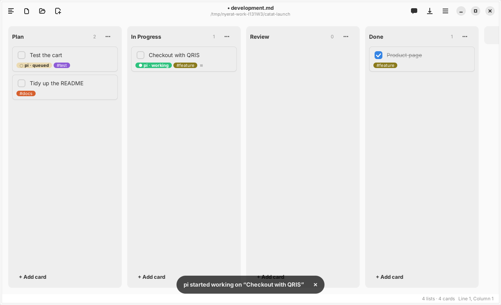
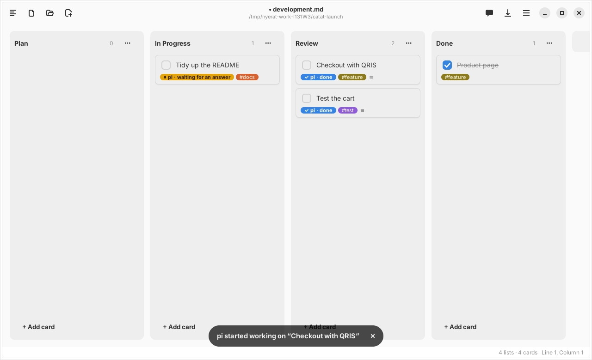
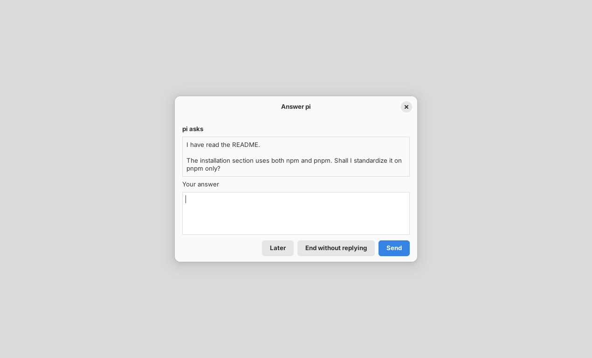
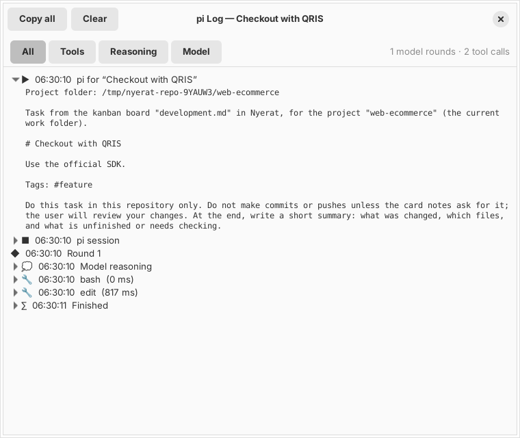

Agent
The pi orchestrator
Nyerat can orchestrate an external harness: a kanban card assigned to @pi is worked on by pi in another project folder, for example a code repo, not in the Nyerat work folder.

Assigning cards
---
kanban: true
project: web-ecommerce ← the default project of the board
---
## Plan
- [ ] Checkout with QRIS @pi #feature
- [ ] Test the cart @pi #project/shop-admin ← the project tag wins over the frontmatter- Write
@piin the card title, or fill in Assigned to in the card edit dialog. - Right-click the card → Work on it with pi.
- The project is taken from the
#project/nametag or from the board frontmatterproject: name. The project folder is asked for once and then remembered in the settings; a card without a project is given a tag from the name of its folder.
When it starts, the card moves to the In Progress list. When it finishes, it moves to Review with the note ↳ pi done …: summary. If it fails, the card stays where it is with the note ↳ pi failed …: reason.
Notes as context
Pi works in the project folder, so it cannot read the notes in the Nyerat work folder. Link the notes on the card with [[ ]], and Nyerat copies their contents into the prompt.
- [ ] Checkout with QRIS [[Spec#Payment]] @pi
Follow the decisions in [[Meeting Notes]].- Links in the title and in the notes of the card are both included, at most 10 per card. The names are looked up with the same rules as Ctrl+click in the editor.
[[Note#Section]]only copies the part under that heading, up to the next heading of the same level.- The contents go into the Related notes from Nyerat section of the prompt, wrapped in a code block. Every note is cut at 8,000 characters, and the total is 24,000 characters. A note that is not found is still named, so that pi knows something is missing.
- An open document is read from its editor, so unsaved edits are included.
- The complete prompt, including the contents of the notes, is visible in the pi log.
- The contents of the notes are taken at Work on it with pi. Reply to pi continues the same session without copying them again.
On the board, a link in a card title can be clicked to open its note, and a link in the notes of a card is shown as a ↗ name row below the chip. The notes field in the card edit dialog suggests names when you type [[.
Card status
| Chip | Meaning |
|---|---|
| ◇ | Assigned |
| ◌ | Queued: the same project is being worked on by another card |
| ● | Working |
| ⏸ | Waiting for your answer |
| ✓ / ✕ / ■ | Done / failed / stopped |
One project folder is worked on by one harness at a time; other cards queue and start automatically.

Answering pi
Pi runs in RPC mode, so its conversation can be continued from Nyerat:
- Questions. When the answer of pi ends with
?, the card becomes ⏸ and stays in In Progress. Right-click → Answer pi… opens the question with an answer box. - Permission and input. A pi extension that asks for permission (e.g. a confirmation before
rm -rf) appears in the same dialog: Allow/Deny, a choice, or an input. - Later leaves pi waiting; End without replying closes its session.
- Steer pi… while pi works: the guidance is received before the next step, without stopping the work.
- Reply to pi… after it finishes: continues the same pi session so the card is worked on again.


Log and control
The card menu also has:
- View pi Log: tools, reasoning, answers, your requests and answers, tokens, cost, and the session id for
pi --session <id> - Stop pi / Cancel Queue
- Remove Assignment and Change Project Folder…

Access boundaries
Review the result in that project repo itself (pi is asked not to commit). Pi does not ask for tool permission by itself; permission requests come from the pi extensions you install, such as permission-gate.
- The Markdown only names the name of the project. The name is mapped to a folder that can only be filled in through the choose-folder dialog, so a card or an agent cannot point the harness at an arbitrary folder.
- The Nyerat work folder, its contents, its parents, the root, and relative paths are rejected as a project folder.
- The contents of the notes linked with
[[ ]]from the Nyerat work folder are sent to pi as part of the prompt (and to the model provider that pi uses). Do not link notes that must not leave. Only Markdown files in the work folder can be linked; dot folders, symlinks, and paths outside the work folder are not included. - Nyerat itself does not write to the project folder. Closing the window stops every harness that is running.